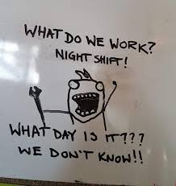
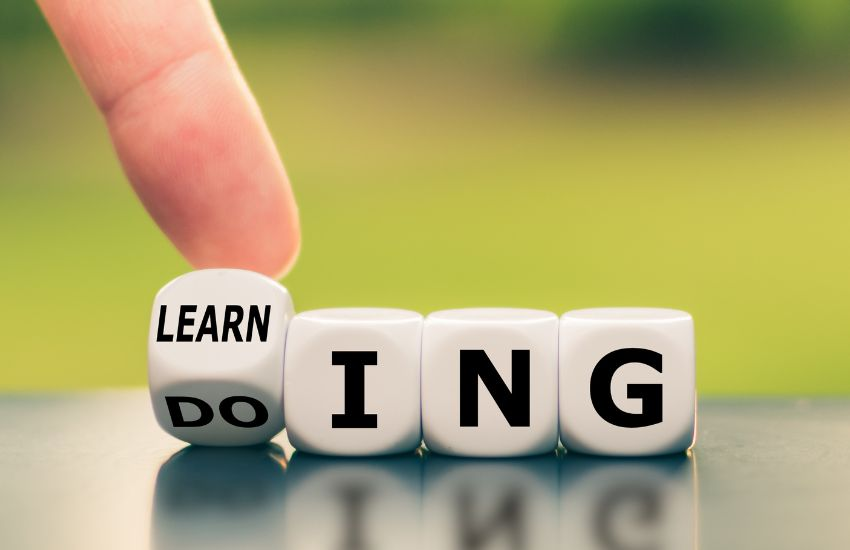

I have lived in Delaware my entire life and have always had a love for tech. In middle school I developed a passion for creating digital art and that love grew throughout high school. When it came time for me to go to college, I wanted to continue my artistic passions, but I knew I needed to persue a profession with more lucrative job prospects. That's when I discovered frontend development. To my surprise, this was an almost perfect blend of art and coding. Despite being interested in the subject matter, I failed to set myself up for immediate success post-grad. In order to be productive and pay bills, I took up a job at my local Walmart. After making a few connections with coworkers and customers alike, I had heard about opportunities at Code Differently. Now I am here, excited for the next 20 weeks, and really looking forward to improving my technical and power skills.
Outside of work, I throroughly enjoy the following:
The best way to reach me is to send me a message via Google Chat. It has a nice interface that allows for an easy transition between private messages, consolidated text threads and group chats. I also try to look at my email pretty frequently. If anyone were to struggle reaching me through those means. I always reply to direct messages on Instagram.
I describe my learning style as a mix between visual and "trial by fire". Being able to recieve visual clarification on a specific task really helps cement that information in my brain. What I mean when I say "trial by fire" is that I like to dive into topics, make mistakes at 100 mph and learn from them. It's almost like I am brute forcing my learning but it's more like I enjoy owing the fact that I won't understand a topic at the first go-around, but I won't let that deter me from moving forward.
I am very much a night owl. I like the idea of being able to partake in deep learning during peacful hours. I like to throw on some Bossa Nova jazz or some Native American flute music and dial into whatever I am doing. Despite this preference, I still do enjoy working during the day as it better allows for collaborations and Q `n' A's.
 